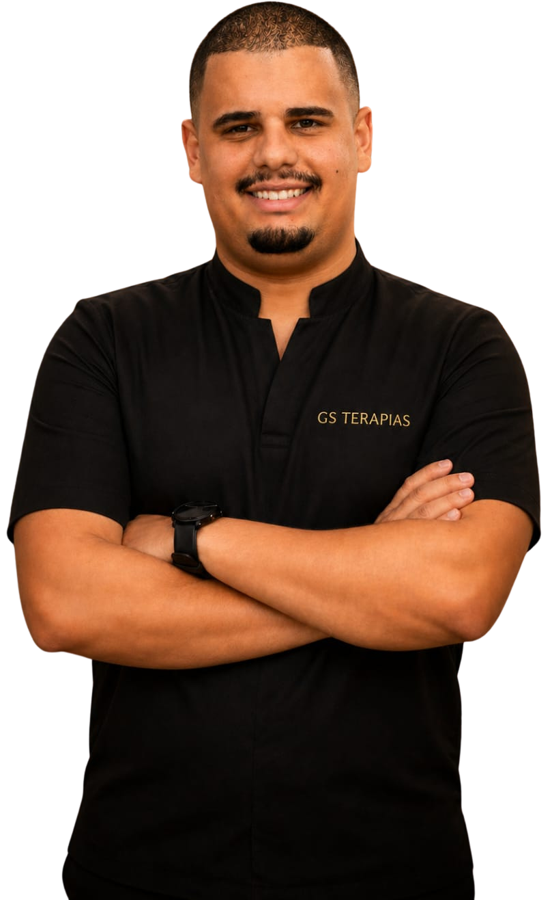
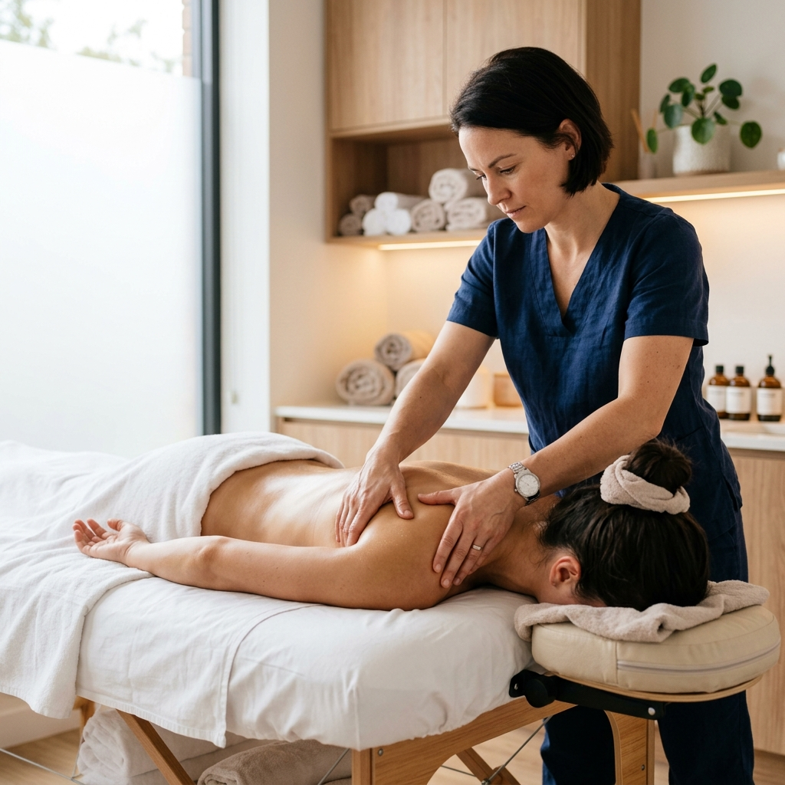
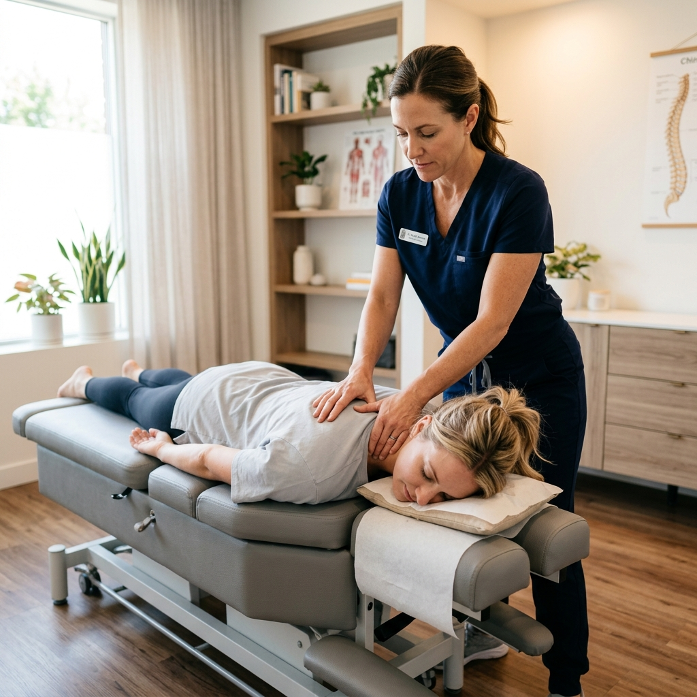
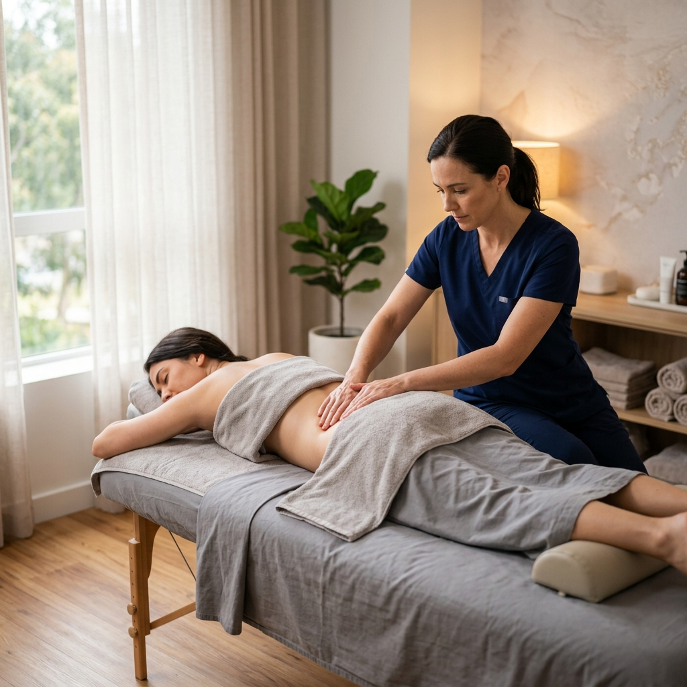
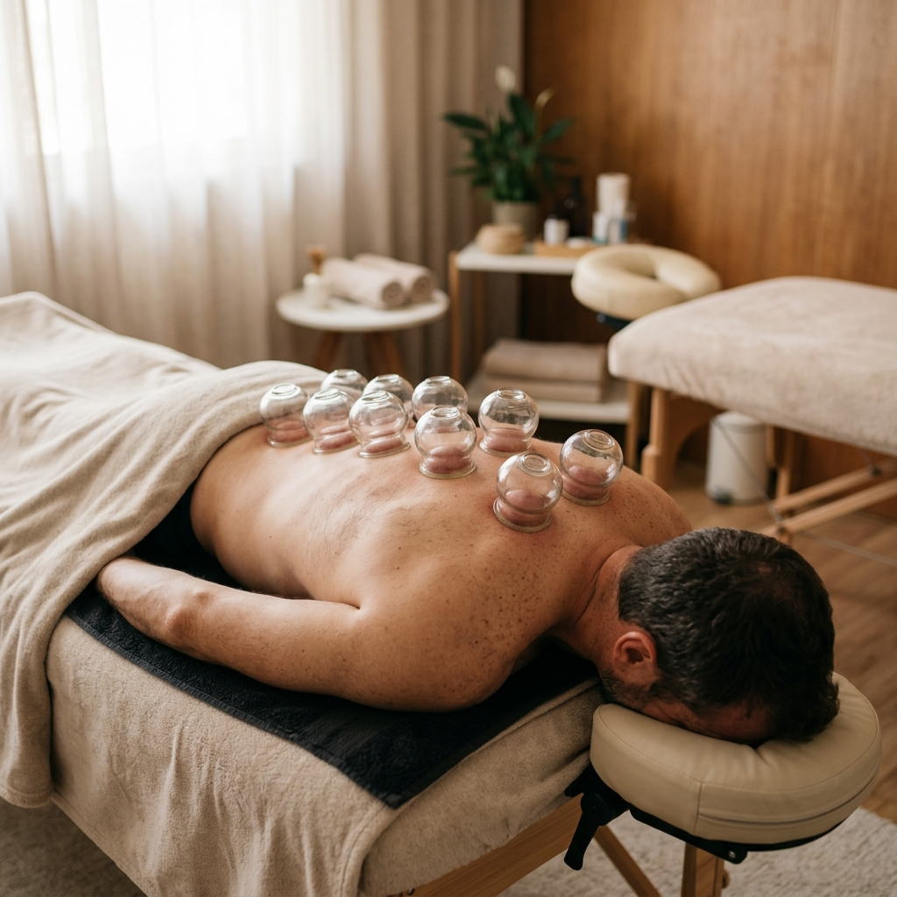

ESPECIALISTA EM MASSOTERAPIA E QUIROPRAXIA EM BH
Massoterapia e Quiropraxia em Belo Horizonte para aliviar dores e destravar seu corpo
Atendimento personalizado para dor lombar, pescoço travado, tensão muscular e corpo travado.

Evolução percebida pelos pacientes na GS Terapias
O que os pacientes costumam relatar e buscar em nossas sessões: mais mobilidade, menos tensão, corpo mais leve, redução da rigidez e melhora na liberdade de movimento.
A evolução varia para cada paciente de acordo com avaliação individualizada.
Tratamento Especializado
Principais dores que a GS Terapias pode ajudar a tratar
Atendimento focado em aliviar desconfortos e devolver a mobilidade do seu corpo de forma natural.
Dor lombar ao sentar ou levantar?
O que você sente: Pontadas, queimação ou travamento na região baixa das costas.
Como ajudamos: Redução da tensão na lombar e destravamento para devolver a mobilidade sem dor.
Serviço indicado: Quiropraxia + Massoterapia.
 Agendar Alívio Lombar
Agendar Alívio Lombar
Pescoço travado ao acordar?
O que você sente: Dificuldade de virar o pescoço, torcicolo e dor irradiada.
Como ajudamos: Liberação da musculatura cervical para aliviar a rigidez e dor imediatamente.
Serviço indicado: Massoterapia Terapêutica.
Destravar Pescoço
Ombros tensos e pesados?
O que você sente: Sensação de carregar um peso constante, nódulos de tensão (pontos-gatilho).
Como ajudamos: Desfazemos nódulos de tensão com pressão localizada para alívio do estresse.
Serviço indicado: Ventosaterapia + Massoterapia.
Aliviar Ombros
Corpo travado e má postura?
O que você sente: Rigidez geral, dor ao se movimentar e postura curvada por longas horas no PC.
Como ajudamos: Liberação do tecido conjuntivo para devolver a flexibilidade natural do corpo.
Serviço indicado: Liberação Miofascial.
Melhorar Mobilidade
Tratamentos Sob Medida
Tratamentos manuais para dores, tensão e corpo travado
Procedimentos personalizados para cuidar de você por inteiro, com foco em saúde, segurança, alívio e mobilidade.

Massoterapia Terapêutica
O tratamento ideal para quem sofre com tensões musculares, nódulos e dores crônicas.
- Massagem: Alívio imediato.
- Pontos gatilho: Liberação de tensão.
- Circulação: Melhora o fluxo local.

Quiropraxia Coreana
Técnica voltada para correção postural e destravamento das articulações sem movimentos bruscos.
- Correção de postura
- Alívio de dores nas costas
- Maior mobilidade
- Prevenção de lesões

Liberação Miofascial
Liberação profunda do tecido conjuntivo para devolver a amplitude de movimento e reduzir rigidez.
- Liberação profunda
- Redução de rigidez muscular
- Prevenção de lesões
- Ideal para desportistas

Ventosaterapia
Uso de ventosas para estimular o fluxo sanguíneo e acelerar a recuperação muscular local.
- Estimula fluxo sanguíneo
- Recuperação acelerada
- Alívio de contraturas
- Desintoxicação muscular
Quem Cuidará de Você
Guilherme Santiago — especialista em massoterapia na Pampulha
Olá, sou Guilherme Santiago. Meu foco é promover bem-estar e devolver a sua mobilidade por meio de um cuidado individualizado. Cada corpo conta uma história e exige uma abordagem única.
Com formações em Massoterapia Terapêutica, Quiropraxia e Liberação Miofascial, trabalho para entender a origem das suas tensões. Não aplico protocolos genéricos: combino técnicas manuais seguras para proporcionar alívio focado e recuperação muscular.
Meu compromisso é oferecer um ambiente seguro e um tratamento transparente na região do Castelo (Belo Horizonte), focando na redução de desconfortos e na melhora contínua da sua qualidade de vida.
- Especialista em Massoterapia Terapêutica
- Especialista em Quiropraxia Coreana e Japonesa
- Formação em Liberação Miofascial Avançada
- Formação em Ventosaterapia
- Especialista em Recovery Esportivo
- Especialista em Reflexologia Podal
Depoimentos reais
Avaliações reais de pacientes de massoterapia e quiropraxia

"Excelente profissional! Fiz atendimento com o Guilherme Santiago e simplesmente amei. Muito atencioso, competente e com técnicas incríveis — saí totalmente relaxada e renovada. O ambiente é acolhedor e transmite muita paz. Recomendo de olhos fechados, um verdadeiro diferencial no cuidado e bem-estar!"
"O Guilherme é excelente. Atencioso, simpático, acolhedor, compreensivo, dedicado, competente, muito profissional e comprometido. O que um verdadeiro profissional da saúde deve ser. A sessão de massoterapia realizada no meu marido foi mais que terapêutica: ela o ajudou a relaxar, minimizar as dores e a dormir. Recomendo demais."

"Nossa muito bom!!! Sou massoterapeuta na área, realizei um atendimento no Guilherme, e nesse pouco tempo ele me passou experiências sensacionais na area da Terapia, sensacional."

"Guilherme é bem tranquilo, atencioso e ótimo profissional! Adorei a massagem e já agendei a próxima sessão. Recomendo!"

"Excelente profissional. Muito conhecimento técnico e conseguiu me passar segurança do que estava aplicando. Recomendo."

"Hoje tive meu primeiro atendimento com o Guilherme e ele é um profissional incrível além de simpático e educado, me deixou tranquila e a vontade para o atendimento... Eu super amei e super indico. Vão conhecer o trabalho dele e ter mais qualidade de vida, eu garanto que não vão se arrepender. Sou muito Grata."
Sobre a GS Terapias
Informações rápidas para quem busca atendimento terapêutico no Castelo, em Belo Horizonte.
Serviços
Massoterapia, quiropraxia, liberação miofascial, ventosaterapia, recovery esportivo e reflexologia podal.
Ver tratamentosDores atendidas
Dor lombar, pescoço travado, ombros tensos, tensão muscular, má postura e estresse corporal.
Sintomas e alívioRegião
Atendimento no bairro Castelo, próximo à região da Pampulha, em Belo Horizonte.
Dúvidas frequentesPerguntas Frequentes
Perguntas frequentes sobre massoterapia e quiropraxia em BH
Tire suas dúvidas antes de agendar sua sessão.
A GS Terapias atende na R. Castelo de Crato, 40 - Castelo, Belo Horizonte - MG, 31330-120, na região da Pampulha.
A GS Terapias oferece massoterapia terapêutica, quiropraxia, liberação miofascial, ventosaterapia, recovery esportivo e reflexologia podal.
A massoterapia pode ajudar a aliviar tensões musculares, rigidez e desconfortos relacionados à dor lombar, principalmente quando a causa envolve tensão corporal, sobrecarga muscular ou má postura. A avaliação individual é importante.
A quiropraxia pode auxiliar na melhora da mobilidade e no alívio de tensões na região cervical, dependendo da avaliação individual e das condições de cada pessoa.
O agendamento pode ser feito pelo WhatsApp da GS Terapias: (31) 99898-7249. Você pode clicar em qualquer botão de contato no site.
Sim. A GS Terapias fica no bairro Castelo, em Belo Horizonte, região próxima à Pampulha.
Muitas pessoas relatam sensação de alívio, leveza e melhora da mobilidade já na primeira sessão, mas os resultados variam conforme cada caso.
A GS Terapias atende casos de dor lombar, pescoço travado, ombros tensos, tensão muscular, má postura, corpo travado, rigidez corporal e estresse físico.